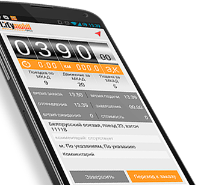

Работа для водителей такси

Приложение для водителей
Загрузить из
GOOGLE PLAY
Компания Сити-Мобил проводит постоянный набор водителей такси с личным автотранспортом.
Для работы в системе Сити-Мобил необходимо иметь коммуникатор любой марки и модели с GPS модулем и с операционной системой Android версия 3.2 и выше, или Apple iPhone.
Телефон для справок: 8 (925) 094 50 50 (Татьянa).
Для заключения договора оказания информационных услуг с ООО "Сити-Мобил" в письменном виде, необходимо приехать в офис организации по адресу: ул. Архитектора Власова д. 55 (см. на карте).
Прием водителей производится по рабочим дням, строго в 13:00.
Прием водителей производится по рабочим дням, строго в 13:00.
С собой иметь:
- • паспорт
- • водительские права
- • техпаспорт на машину
- • свидетельство ИП
- • свидетельство ИНН
- • разрешения на осуществление деятельности по перевозке пассажиров и багажа легковым такси, выданное Департаментом транспорта и развития дорожно-транспортной инфраструктуры города Москвы
Для заключения договора оказания информационных услуг с ООО "Сити-Мобил" в электронном виде, необходимо :
- 1. зарегистрироваться на сайте, получить в смс-сообщении пароль доступа в личный кабинет
- 2. согласиться с условиями типового договора на оказание информационных услуг
- 3. загрузить отсканированные копии требуемых для регистрации документов
- 4. дождаться одобрения заявки
- 5. получить временный доступ к заказам по адресу: http://city-mobil.ru/taxiserv/newwap. Для входа использовать ранее полученные логин и пароль
- 6. в течение двух недель с момента получения доступа к заказам подъехать в офис для заключения письменного соглашения
Условия работы в такси Сити-Мобил
- • Стоимость услуг диспетчерской - от 7% от окончательной стоимости заказа
- • Свободный график для водителя такси
- • Самостоятельный выбор заказов для исполнения
- • Автоматизированные расчеты
- • Пополнениее кошелька из аппаратов, не приезжая в офис
- • Работа с заказами из мобильного телефона
- • Действительно честные и равные условия для ВСЕХ водителей
Требования к машине
- • Иномарка класса комфорт‚ бизнес и VIP в хорошем состоянии не старше 10 лет. Иномарка эконом класса не старше 5 лет.
- • Левый руль, российские номера
- • Наличие ОСАГО
Требования к водителю
- • Индивидуальные Предприниматели‚ имеющие РАЗРЕШЕНИЕ на осуществление деятельности по перевозке пассажиров.
- • Минимальный возраст - 23 года
- • Минимальный стаж вождения - 2 года
- • Гражданство РФ